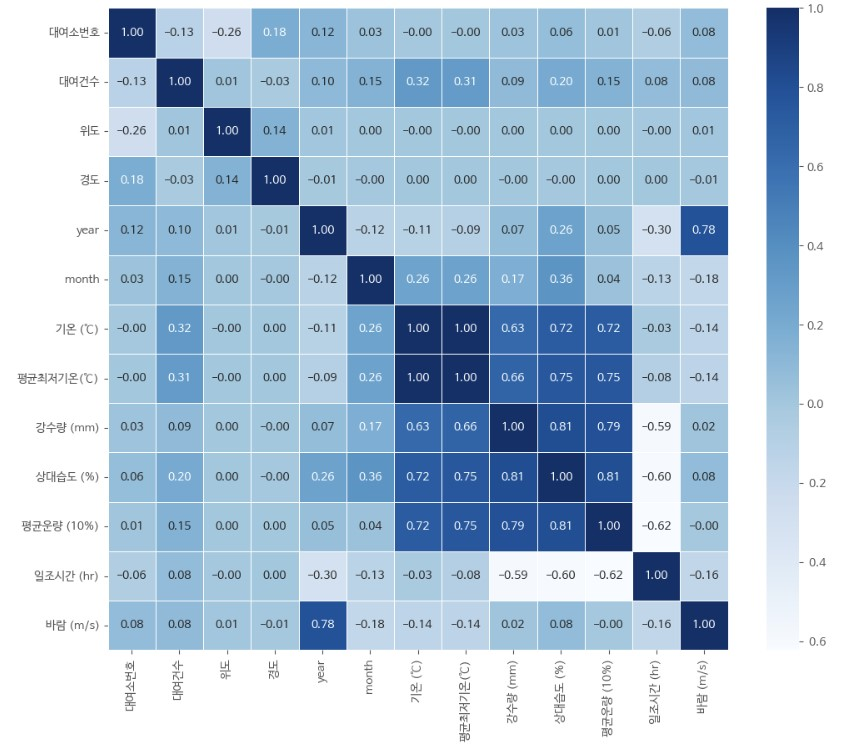

대여량에 영향을 주는 변수들을 시각화를 통해서 알아봅시다.
대여월에 따른 대여량 변화
18년도에서 21년도 1월까지의 서울시 전체 대여량을 월별로 시각화한 그래프입니다. 시간이 흐를수록 점진적으로 우상향하는 것을 확인할 수 있습니다. 더 나아가 겨울에는 대여량 합계가 적지만 여름에는 대여량이 많음을 알 수 있습니다.

기온에 따른 대여량 변화
기온에 따라서 대여량을 시각화한 결과입니다. 그래프에서 5도에서 10도 사이가 가장 많은 대여량을 보이고 있습니다. 이는 한국의 봄과 가을의 평균 기온인 5도에서 10도 사이에 대여량의 증가한다는 것은 봄과 가을이 대여량 예측에 유의미한 영향을 준다는 것을 유추할 수 있습니다.

연도별 대여량 변화
18년도에서 최근으로 가까워질수록 대여량이 증가함을 확인할 수 있습니다. 이는 공유 자전거 따릉이의 사용량이 앞으로도 증가할 것임을 유추할 수 있게 합니다. 더 나아가 계절적 요인에 대해서도 시각적으로 확인할 수 있습니다. 겨울보단 따뜻한 여름과 가을에 대여량이 올라감을 알 수 있습니다.
다양한 변수들과 따릉이 대여량의 상관관계
지금까지 기온과 계절을 위주로 대여량의 변화를 살펴보았습니다. 이번에는 조금 더 다양한 변수들과 대여량의 관계를 확인해보겠습니다. 그래프에서 나와있는 숫자가 양의 숫자이며 클수록 서로 더 큰 상관관계를 가짐을 의미합니다.

상대습도*강수량과 대여량 변화
상대습도가 높더라도 강수량이 낮은 경우와 상대습도가 낮더라도 강수량이 높은 경우에는 대여량이 어떻게 반응하는지 의문점을 느꼈습니다. 이를 시각화한 결과, 상대습도가 높더라도 강수량이 낮은 경우, 즉 안개낀 날과 같은 경우는 대여량이 높음을 알 수 있었습니다. 이를 통해서 상대습도와 강수량을 곱한 새로운 파생변수, '상대습도*강수량'을 만들었습니다.
추위점수에 따른 대여량 변화
기상청에서 얻은 데이터인 바람(m/s)과 평균최저기온(℃)을 통해서 '추위점수'라는 파생변수를 만들었습니다. 이를 시각화한 결과, 유의미한 상관관계를 발견했습니다.